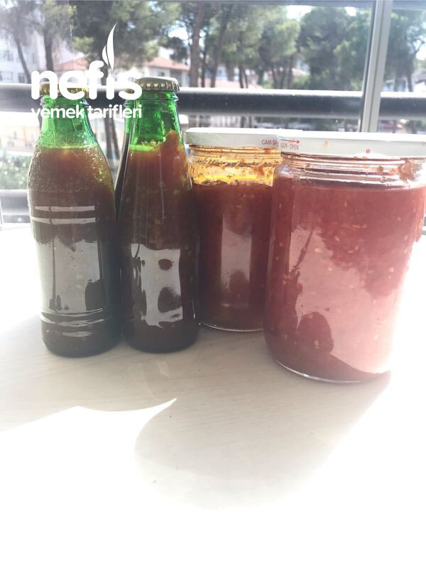

🍽️ 12-14 kişilik⏱️ Hazırlık: 5 sa🔥 Pişirme: 2 sa🏷️ Diğer Tarifler🏷️ Kış Hazırlıkları
Malzemeler
- Domates ( ben toplam 6 kasa domates kullandım)
- Kavanoz ve yeni kapak
- Soda şişesi ve şişe kapağı
- Bir kısmını menemenlik olarak hazırlamak istersek 2 kg kadar yeşil biber
Hazırlanışı
- Biberleri yıkayıp doğruyoruz.
- Fırın kağıdı serdiğimiz tepsiye koyup biraz yağ ile karıştırıp fırında kızartıyoruz.
- 2 tepside hazırladım.
- Önce domatesleri iyice yıkıyoruz.
- Kabuklarını soyup büyüklüğüne göre 4 e veya 8e bölerek fazla suyunun akmasını sağlıyoruz.
- Domatesleri rondodan geçiriyoruz.
- Huni yardımıyla önceden yıkadığımız soda şişelerine dolduruyoruz.
- Şişeleri şişe kapatma aletiyle kapatıyoruz.
- Kapatılan şişeleri imkan varsa büyük kazanlarda kaynatıyoruz. Kaynamaya başladıktan sonra 1 saat yeterli ( soğuyunca kazanı boşaltabiliriz).
- Ben bulaşık makinesinde uzun ve en yüksek sıcaklıkta kaynatıyorum.
- 3 kasa domatesten 216 şişe elde ettim.
- Yarısını yapıp şişeleri makineye koyup diğer yarısına sonra devam ettim.
- Çıkardığım sıcak şişeleri sofra beziyle sarıp beklettim. 2. Gurup şişeyi makinede soğuyana kadar beklettim.
- Diğer 3 kasa domatesi de aynı şekilde yıkayıp doğradım.
- Rondodan daha iri parçalı geçirdim.
- Büyük tencerede kaynattım.
- Suyunu çekince kaynak olarak kavanozlara doldurup ters çevirdim. Üzerini örttüm.
- 3. Tencereye yeterince kaynayınca önceden hazırladığım kızarmış biberleri de ekleyerek karıştırdım.
- İster menemen olarak, ister sade olarak tüketilebilir. Kullanmadan önce biraz yağ ve tuz ilavesiyle birkaç dakika kavurarak tüketebiliriz.
- Büyük tencerede 3 defada 600- 700 gram lık toplam 61 civarında kavanoz elde ettim.
- 21 tanesini menemenlik hazırladım.